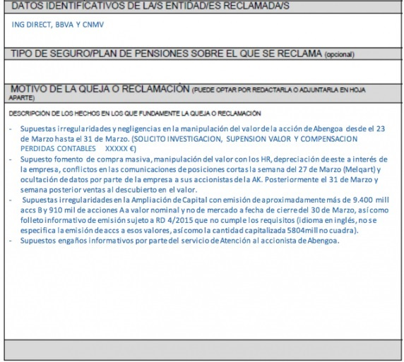
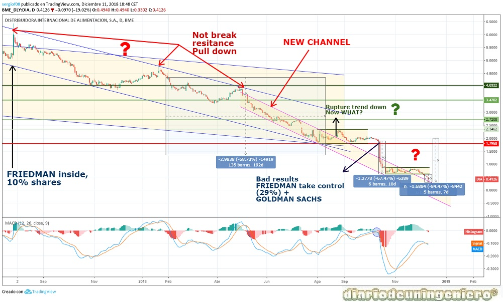

La comisión nacional de valores (CNMV) es un organismo adscrito a la Secretaría de Estado de Economía y Apoyo a la Empresa del Ministerio de Economía y Competitividad, fundado en 1988, encargado de la supervisión de los mercados de valores en España.
Los objetivos de la CNMV son:
La acción de la CNMV como órgano de control se centra principalmente sobre:
Las normas de conducta para los miembros de la CNMV son los siguientes:
Siguiendo con el hilo anterior la gran estafa de las hipotecas dejaría mucha gente implicada por la no supervisión de las entidades bancarias y como no la CNMV fue una de las favoritas. En ella estas entidades bancarias tuvieron que pedir prestamos al estado para poder ser solventes y que no se viniera la economía abajo.
Recordemos que el esquema financiero español hasta hace unos años era del tipo Ponzi piramidal, en el que los de arriba son nutridos por los inversores o ahorradores españoles y en el que el dinero ni siquiera existe como tal si no que estaba prestado a entidades que realizaban préstamos para vivienda u otros usos. Por lo que si algo fallaba en la cadena, como por ejemplo la no liquidez de los que pagan abajo, como son los hipotecados todo el esquema se venía abajo.
Actualmente esto esta siendo corregido y muchos bancos se han puesto manos a la obra. Mirando las victimas de este desastre lo primero que vemos son las cajas de ahorros desaparecidas, entre ellas CajaMadrid, reconvertida a Bankia y comprada por el estado. En ella nos encontramos como presidentes y directores a gente muy vinculada a cargos políticos de las comunidades autónomas y las alcaldías. Y es que no tienen suficiente con cobrar las cifras por parte del estado sino que siempre esta bien una buena mordida a empresarios o a banqueros por hacer la vista gorda.
Aunque ha pasado factura ya que el Banco Popular no tuvo opciones de maniobra y tuvo que quebrar. Sin embargo este caso aún no esta cerrado y en el puede haber responsables también en la CNMV. Un banco con una capitalización completamente falseada y con unas cuentas erróneas, así como muchas ampliaciones de capital autorizadas por los miembros del banco, en las que la CNMV no vio ningún delito, ni previo semejante desastre cuando mirando la progresión desde 2012 se podía haber actuado contundentemente, quitando el banco del IBEX35 y suspendiendo el valor en el peor de los casos hasta que se llegará a juicio y se sentase a los responsables. Pero nada de esto sucedió, lo que finalmente paso es que el Banco Santander se llevo toda la infraestructura del Popular por el precio de su deuda que para el Banco Santander son migajas. Y es que siempre el grande se come al pequeño. Y es que lo que ocurría en el pasado ya lo veía venir cualquier persona que siga la bolsa sin estudios en economía, pues estas personas que tienen tantísimos estudios y experiencia en el sector que es lo que no sabrían. Cualquier persona que este en la CNMV y luego no sepa lo que suceda no debería encontrarse en ella, ya que los que están es para algo.
Habría que investigar que sucedió entre el banco, el ministerio de economía que entonces era presidido por Luis de Guindos y el banco Popular, con Ron y Saracho a la cabeza.
En este caso la CNMV ha actuado de manera correcta desde mi punto de vista, fijando la OPA a aquella empresa que ofreciera más. Sin embargo ha habido otras empresas entre las que están ACS y AENA que han mostrado interés por la empresa. Aunque esta última no ha podido acceder debido a que aún es una empresa estatal ya que el 51% de sus acciones son del estado. Sin embargo al ser ACS española frente a Atlantia, el estado ha presionado para que al final se lleve la empresa ACS. Es de recordar la influencia que tiene el presidente sobre el gobierno, ya que forma parte del selecto grupo de bancos y empresas que manejan la rienda de nuestro país.
Si nos fijamos en la siguiente imagen recogida de El Periódico, observamos las dos ofertas presentes:
Tras dos años caminando a la deriva en Marzo de 2017 se presento el acuerdo de restructuración financiera de Abengoa. Antes justo de la operación se habían puesto de acuerdo los principales acreedores, como son la banca española, el francés Credit Agricole y algún que otro fondo extranjero. Sin embargo había un 3% de acreedores que no aprobaba el acuerdo y querian el concurso de acreedores para recuperar en parte el dinero perdido.
El acuerdo pretendía una quita millonaria de la deuda a cambio de reflotar la compañía. Para ello se iba a despojar de la empresa a los antiguos dueños como era la familia Benjumea que controlaba un 51% de la sociedad. Esto sería llevado a cabo mediante una emisión de nuevas acciones que diluiría a los antiguos accionistas en un 95%. A cambio de la quita los bancos pondrían como condiciones poner a Urquijo como presidente y que la familia Benjumea estuviera fuera del órgano de dirección. Además recibirían la mitad de la totalidad de las nuevas acciones. La empresa pasaría de valer 190M a valer 8M más el valor de las nuevas acciones. Esta dilución sería avalada por la CNMV, y difundida por la mayoría de medios de comunicación.
A parte de todo esto se imputaría a los Benjumea delitos de falsedad de las cuentas de Abengoa y las altas indemnizaciones cobradas del que finalmente no serían juzgados a cambio de su silencio. Cosa que hablare más adelante. Sólo es posible en España que un tío que hunda una empresa de casi 20.000 trabajadores reciba una indemnización de 3 millones de euros como premio por su nefasta gestión.
Hasta aquí todo encaja, pero ¿dónde estaba la trampa?
Los bancos que habían firmado el acuerdo nada más conocerse la noticia recomprarían sus propias acciones y las acciones de muchos minoristas con el objetivo de distorsionar el mercado. La acción subiría exponencialmente en cuestión de horas hasta valer más del doble de su precio anterior, sabiendo que iba a haber una dilución con su correspondiente corrección. Debería subir si, ya que se alcanzaba un acuerdo pero contabilizando que iba a valer 8 M mañana lo que tenía que haber hecho es bajar a mínimos para luego ajustar el valor a la nueva realidad.
Esta operación cabe dentro de la legalidad, lo que no cabe es que aquellos que compraban estaban entrando a su vez en corto contra el valor para luego jugar a la baja y ganar en diferencias ya que ellos conocían bien toda la estructura financiera y los problemas reales que tenía Abengoa a parte de la deuda que decían que iban a subsanar, que luego se conocería que era mayor de lo que pensábamos y de que sobre todo el beneficio neto y el EBDITA ya no eran lo que hacía dos años era. Todo esto debido a la paralización de contratos mientras estaba en preconcurso de acreedores.
Si a eso le sumamos que la CNMV no actualizo las posiciones cortas esos días con lo que la transparencia de la que se presume había caído en saco roto Recordemos que dos años antes la CNMV multo a un banco británico por tener posiciones cortas en Abengoa.
Esa falsedad en las nuevas cuentas de Abengoa para poder pillar a incautos es lo que la CNMV se tenía que haber acelerado a presentar para poder legitimar la NORMA 9 que tienen que cumplir. No hablo de otra de la de igualdad de oportunidades en los inversores, ya que había algunos que contaban con mejor información que otros para poder operar..
Esto a día de hoy todavía no se a comenzado a investigar porque aún se esta en una investigación previa. No es otra que la los Benjumea. Estos señores recientemente se han personado contra los bancos por haber dejado caer a Abengoa, según ellos. En realidad yo la veo con otros ojos. Ellos fueron los que hicieron que cayera y estos lo que hicieron fue absorber la sociedad. A cambio habría muchos favores de unos y otros y ahora como no estan de acuerdo pues va a haber guerra entre una mafia y otra.
Al parecer todas esas posiciones cortas habrían sido realizadas desde el banco Santander por parte de diferentes sociedades inglesas que controla con el beneplácito de la CNMV y después de Abengoa, empresa que ahora mismo tiene bajo control.

Al parecer ante esos dos días la CNMV se excusa en que antes de que tome diferente denominador no tiene porque comunicarse, ya que según ellos al día siguiente todas esas posiciones cortas se cerrarían. Por otro lado los impugnantes que reclamaron en su día ganaron el juicio. Que cosa más extraña, ¿no?. El juez dio la razón a Abengoa en que no tenía la suficiente capacidad para sacarlo de concurso de acreedores y después dio la razón a aquellos que no firmaron el acuerdo porque según el juez Abengoa tenía el suficiente dinero para pagar a estos otros señores.
¿Qué ha ocurrido pues? que 1 año y medio después del famoso juicio, Abengoa este peor que nunca y debido a que no tiene con que pagar a estos señores quiera presentar un nuevo pacto de restructuración en el que quieren que los nuevos propietarios de la sociedad, que esta compuesta de bastantes minoristas demos casi un 70% de la empresa a los famosos bancos que aceptaron en su día la restructuración y que vendieron la participación que tenían y a su vez hicieron perder mucho dinero a los actuales propietarios. En resumidas cuentas, un robo en toda regla. Y pretenden que se apruebe con el voto positivo de los actuales accionistas cosa que ya se vera al año que viene pero que tiene bastante pinta de que les va a costar.
Si en su día el juez dio la razón a fondos extranjeros que habían reclamado por mucho menos en cuestión de irregularidades, ahora con minoristas españoles no sera menos y en ello ya tendrá Abengoa una nueva serie de impugnantes. Al final tendrá que salir el estado como en el caso Bankia a rescatar la empresa por la inanición de la CNMV. La CNMV debe velar por los accionistas minoritarios en este tipo de operaciones como son las ampliaciones de capital o las restructuraciones y más cuando después de una hay otra y quien sabe si una más y en este caso no ha actuado en absoluto.
A parte de todo esto como si no fuera poco con la dilución del 95% y la siguiente perdida de más del 50%. Recordemos que antes la ampliación la empresa capitalizaba 190 millones con la deuda gigante que tenía. Pues despues de dos años en los que se ha aplicado una inmensa quita y de que se han vendido ya activos por un montante mejor de lo esperado la cotización vale menos de 190 millones. Si hacemos cuentas de cual era el mínimo de cotización de mercados españoles, de 1 céntimo esto jamás debería haber ocurrido pero la CNMV en vez de pedir explicaciones a la empresa, alegando de que se debe respetar el principio de mercado libre en el que se pueda pujar por cualquier valor sobre cualquier acción habilitarían la ventana a un nuevo valor mínimo, la centésima de céntimo haciendo que las acciones se desplomasen un nuevo 60%. Eso según ellos lo hacían para que se pudieran negociar las acciones, es decir, para que el banco Santander pudiera comprar más barato las acciones que le faltan ya que las que tenía las vendió por valor superior al centimo de euro.
Todo esto aún no ha sido investigado pero ya llegará el día. De momento sólo se puede esperar y enviar reclamaciones al defensor del pueblo y al estado español porque la CNMV no es trigo limpio.
De este caso poco sabemos actualmente aunque cada día disponemos de más información. La única cadena de supermercados que cotiza en España ha sido victima de la fiebre especuladora. En 2011 saldría a bolsa con un valor superior a los 2.000 millones, cifra que algunos consideraban que estaba muy por encima de su valor real. Si bien llegaría a los 5.000 millones llegando el valor a un precio de 7 euros por acción. Esto sucedió apenas tres años, concretamente a finales de 2014.
¿Cómo es posible que una empresa implicada en uno de los sectores más estables como es la alimentación pase de cotizar a ese valor a cotizar a un valor cercano a los 200 millones de euros. Es decir, una dilución de un 97%. Yo aún no me lo puedo explicar. Vayamos a los hechos.
El 28 de Julio de 2017 Friedman entra dentro del accionariado de DIA con un 10% del capital. El valor de la empresa se dispara a 6 euros con motivo de la compra. Desde entonces el valor entraría en distribución clara por parte a mi modo de ver de los accionistas antiguos sabiendo como estaba la empresa por dentro. En Enero de 2018, habría absorvido ya Friedman el 25% de la empresa. En Febrero se anunciaría uno de los prolegomenos de la debacle de DIA. Se anunciarían resultados anuales de 2017 dejando de si una perdida del 37% de beneficio. Esto haría que el valor bajase de 4 euros a los 3.5 euros, algo razonable pero a partir de aquí vendrían los sustos. El valor entraría en una espiral bajista que se rompería ya entrando en Septiembre y que se podría apuntar a que el valor habría hecho suelo y a una recuperación lenta.
En mi blog apuntaba a esa posibilidad salvo que perdiera los 1.80€. Esta sería la señal de que algo malo, muy malo podría suceder y es lo que finalmente ocurrió. Los resultados del 1 semestre de 2018 apuntaban a una perdida del 88% con respecto al año anterior. Dejando perdidas en la compañía. El resultado no se hizo esperar y el valor cayo a los 1.25 euros. Una caída de casi el 50%. Esta caída no fue por si solo a causa de las ventas, si no por los cortos que utilizarón entre otros Goldman & Sachs que habrían sido gracias a las acciones prestadas de Friedman.
Poco a poco el valor iría en caída libre, pasando del euro a los 0.80 en cuestión de días y llegando a formarse una especie de canal lateral entorno a este, pivotando entre los 0.6€ y los 0.9€. Hasta el día de hoy 11 de Diciembre cuando ya es noticia oficial que DIA dejara de estar en el IBEX35, noticia que ya se conocía desde que el valor perdió los 1.8 euros. Esto ha bastado para los que estaban en corto para anotarse más beneficio ya que el valor ha llegado a tocar los 0.35€ hoy, una nueva caída del 33% que supone una caída del 85% desde el umbral de los 2 euros.
A continuación muestro la cotización del valor desde que Friedman entrará en el accionariado.

Tras lo cual, ¿qué es lo que debiera haber hecho la CNMV?
Tras la caída del 42% sin llegar a completarse, una vez que hubiese caído un 30% haber suspendido el valor del bolsa. Debería haber un consenso en cual es el umbral en el IBEX35 de caída para que un valor pueda suspenderse, para poder investigar a fondo a que se debe esa caída ya que valores tan grandes esas variaciones son sospechosas. Esto daría bastante más prestigio al selectivo y haría que la gente corriente se replantease entrar en bolsa ya que se podría decir que hay alguien velando por los minoritarios, cosa que hoy en día no ocurre.
Ya no solo no se vela por los minoritarios, sino que tampoco se vela por los intereses españoles, véase la OPA de Albertis, la posible disolución de Abengoa o DIA, donde un ruso que posee uno de las mayores cadenas de supermercados, X5, va a hacerse con una de las mayores cadenas españolas sin que nadie mueva un dedo. Además de quedársela que, porque no podía ocurrir, si la gestión posterior va a ser mejor que con los dueños españoles. Vivimos en un mundo globalizado, pero una cosa es quedársela pagando lo que vale y otra cosa es regalarla.
Si nos fijamos en el gráfico podemos ver como volver al canal bajista que era bastante dificil por tecnico que volviese y es donde se encuentra ahora.
El caso de OHL esta aún por llegar y es que el grupo registra una devaluación de sus acciones de más de cerca del 95% desde sus máximos en 20€ a mediados de 2014. Y del 90% desde los 5 euros hasta los 0.5 euros que marco a mediados de Noviembre. Esta bajada la sitúa ahora mismo en una capitalización mínima de 200 millones de euros.
El grupo tiene una gran deuda y aún vendiendo el año pasado una parte de la empresa como es Concesiones los beneficios siguen siendo negativos. El grupo esta abocado al cierre y el día que ceda el soporte que aún mantiene en el medio euro la caída será brusca. Sería bueno intervenir el valor ante cualquier noticia que produzca una caída de más del 50%, aunque este valor se encuentra ya en el continuo y no debería tener tanto intervencionismo como los valores del IBEX35.
Un valor como este debería de dejar de cotizar en bolsa hasta que haya tenido cierta recuperación desde mi punto de vista. Este valor es mucho más parecido al de Abengoa por la dimensión del grupo y por el sector donde trabaja. Sin embargo el descuento de su cotización ha sido mucho más progresivo y no ha necesitado una dilución para caer a su valor real sino que ha sido el propio mercado el que la ha colocado donde se encuentra.
Esto demuestra que a veces es dejar al grupo que tome sus propias decisiones no como lo que ha pasado con Abengoa. Aún así es un valor con mucho peligro que seguro que dará mas de una sorpresa ...
© 2016 - All Rights Reserved - Diseñada por Sergio López Martínez
El sitio se mantiene gracias a la publicidad, por favor Desactiva Adblock para seguir navegando
He desactivado Adblock![[Valid RSS]](https://www.onepointsync.com/wp-content/uploads/2016/08/valid-rss-rogers.png "Validate my RSS feed")